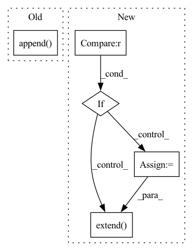

Pattern ID :19638
Before Change
a = []
b = []
for i in range(n):
a.append( i)
b.append((i + 1) % n)
ei = [a, b]
return n, torch.LongTensor(ei)
After Change
b = []
for i in range(n):
dst = gen_adj(n, i)
if dst is not None :
src = len(dst) * [i]
a.extend( src)
b.extend(dst)
ei = [a, b]
return n, torch.LongTensor(ei)
In pattern: SUPERPATTERN
Frequency: 4
Non-data size: 5
Instances Fragment ID: 63971409
Project Name: quiver-team/torch-quiver
Commit Name: 3f2ae2c0042ff9b3b5e623dc5e97dbb475624b1c
Time: 2020-10-20
Author: 41138939+ZenoTan@users.noreply.github.com
File Name: examples/quiver_example.py
M Class Name: AnonimousClass
N Class Name: AnonimousClass
M Method Name: gen_edge_index(2)
N Method Name: gen_edge_index(1)
M Parent Class:
N Parent Class:
M File Name: examples/quiver_example.py
N File Name: examples/quiver_example.py
M Start Line: 7
M End Line: 11
N Start Line: 12
N End Line: 21
Before Change
num_errors += 1
continue
all_ids.append( sentence_id)
all_embeddings.append(embedding)
if index % 1000 == 0:
print(f"Embedded {index} with {num_errors} errors")After Change
start_ix = batch_ix * batch_size
end_ix = min((batch_ix + 1) * batch_size, n_sentences)
if start_ix == end_ix :
continue
sentences_text = sentences.iloc[start_ix: end_ix]["text"].to_list()
sentences_id = sentences.iloc[start_ix: end_ix]["sentence_id"].to_list()
try:
preprocessed_sentences = model.preprocess_many(sentences_text)
embeddings = model.embed_many(preprocessed_sentences)
except IndexError:
// This could happen when the sentence is too long for example
num_errors += 1
continue
all_ids.extend( sentences_id)
all_embeddings.append(embeddings)
if batch_ix % 10 == 0:
print(f"Embedded {batch_ix} batches with {num_errors} errors") Fragment ID: 63971410
Project Name: bluebrain/search
Commit Name: 6eb30c8b3e77791ee4e407dd19d7a5e08fe5e132
Time: 2020-09-04
Author: jankrepl@yahoo.com
File Name: src/bbsearch/embedding_models.py
M Class Name: AnonimousClass
N Class Name: AnonimousClass
M Method Name: compute_database_embeddings(4)
N Method Name: compute_database_embeddings(3)
M Parent Class:
N Parent Class:
M File Name: src/bbsearch/embedding_models.py
N File Name: src/bbsearch/embedding_models.py
M Start Line: 287
M End Line: 309
N Start Line: 433
N End Line: 494
Before Change
pout = model(feats)
loss, wer = sb.compute_cost_wer(pout, phn, [wav_len, phn_len])
losses["loss"].append(loss.detach())
losses["wer"].append( wer.detach())
if __name__ == "__main__":
main()After Change
loss.backward()
sb.optimizer([model])
losses["loss"].append(loss.detach())
elif mode == "valid" :
with torch.no_grad():
model.eval()
pout = model(feats)
loss = sb.compute_cost(pout, phn, [wav_len, phn_len])
losses["loss"].append(loss.detach())
predictions = filter_ctc_output(
predictions, blank_id=sb.compute_cost.blank_index
)
losses["wer_stats"] = edit_distance.accumulatable_wer_stats(
phn, predictions, stats = losses["wer_stats"]
)
elif mode == "test":
with torch.no_grad():
model.eval()
pout = model(feats)
predictions = filter_ctc_output(
predictions, blank_id=sb.compute_cost.blank_index
)
refs = zip(id, phn)
hyps = zip(id, predictions)
details_by_utt = edit_distance.wer_details_by_utterance(refs, hyps)
losses["wer_details"].extend( details_by_utt)
if __name__ == "__main__": Fragment ID: 63971412
Project Name: speechbrain/speechbrain
Commit Name: 4c504abf68fef69963a2fe3bc31386936365e967
Time: 2020-04-08
Author: aku.rouhe@aalto.fi
File Name: recipes/ASR_CTC/TIMIT/VGG2_BLSTM_MLP/experiment.py
M Class Name: AnonimousClass
N Class Name: AnonimousClass
M Method Name: neural_computations(6)
N Method Name: neural_computations(5)
M Parent Class:
N Parent Class:
M File Name: recipes/ASR_CTC/TIMIT/VGG2_BLSTM_MLP/experiment.py
N File Name: recipes/ASR_CTC/TIMIT/VGG2_BLSTM_MLP/experiment.py
M Start Line: 72
M End Line: 79
N Start Line: 61
N End Line: 102
Before Change
print("index_list:", index_list) if debug else None
index = index_list[1][0]
if index not in worker_type_list and index not in supply_type_list:
previous_bo.append( index)
return previous_bo
After Change
diff_count = torch.sum(diff).item()
print("diff between unit_counts_bow", diff_count) if debug else None
if diff_count >= 1.0 :
print("diff:", diff) if debug else None
index = torch.nonzero(diff, as_tuple=True)[-1]
print("index:", index) if debug else None
index = index.detach().cpu().numpy().tolist()
previous_bo.extend( index)
return previous_bo
Fragment ID: 63971432
Project Name: liuruoze/mini-alphastar
Commit Name: a115d8c35ded3fa3d608df5576d72a17cf941787
Time: 2021-12-10
Author: liuruoze@163.com
File Name: alphastarmini/lib/utils.py
M Class Name: AnonimousClass
N Class Name: AnonimousClass
M Method Name: calculate_build_order(3)
N Method Name: calculate_build_order(3)
M Parent Class:
N Parent Class:
M File Name: alphastarmini/lib/utils.py
N File Name: alphastarmini/lib/utils.py
M Start Line: 126
M End Line: 145
N Start Line: 111
N End Line: 135